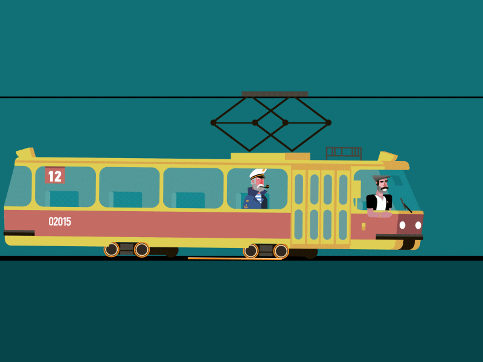

Трамвај је млађи брат електричног, путничког воза. Његова је мања верзија, краћи је и ужи јер је прилагођен употреби у градовима и густом саобраћају. Трамвајске шине су мање, постављене су уже а прагови су под земљом. Главна предност примене трамваја у граду је та што његови електични мотори не загађују околину, он не труцка и прави мању буку од других возила. Када су се појавили средином 19ог века трамваје су вукли коњи али се каснијим напретком технологије прешло на електрични погон.
Трамвај

